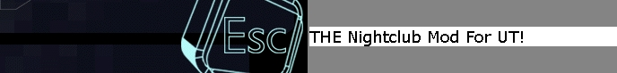

Once I get that upgrade to 36-hour days, I will tackle that. – Mychaeel
Legacy:Esc/FAQ
|  | |
| http://www.esconline.org | Revision 1, 09/06/02 |
| Click here for the latest version | |
Here is the up-to-minute latest version of the FAQ for the Esc mod - http://www.esconline.org - the Only Nightclub Mod for Unreal Tournament 2004, and the original Unreal Tournament! Enjoy! -DJPaul
Welcome to the Esc FAQ!
Esc is distributed under the Gnu General Public License. Basically, you can distribute Esc, but you have to include the source or make it available to anyone who wants it. If you modify Esc and distribute it, you need to distribute the source code for your changes as well.
This is a developer's release, which means it's still pretty rough, and a non-technical user may find it difficult to figure out.
Contents
Quick Start and Installation[edit]
To use Esc, you must have a copy of Unreal Tournament 2004. Make sure Unreal Tournament is patched to the latest version (3339). Double click the "client" installer to install Esc. Always use the Esc shortcut or Start menu to start Esc, since this starts up the EscDaemon which does the music streaming. Then join a multiplayer server, just like you do in Unreal Tournament 2004. That's it!
Esc Flagship Server: I've left MIT, so it's sporatic at best. But you can try 209.6.112.159
To dance, hit the "toggle dance mode" key (default: o). The camera will switch to an external, third person view, and red arrows should appear on the screen. You need to hit the given arrow key on the beat of the music–when the arrow flashes. Right click to switch to "pointer mode" where you can scroll back the chat, send msgs to people, buy things, etc.
Things To Remember =[edit]
Dancing is the raison d'être for Esc - therefore it helps if you know your 'Toggle Dance Mode' key - this will switch between the standard interface, and the Dance Mode.
If you wish to dance, are in 'Dance Mode' yet hear no music - you are either downloading the music, or there is no 'MusicSource' near you in the level. Read the FAQ list for solutions to these problems.
Starting Your Own Server[edit]
Their are many reasons you might start an Esc server - perhaps you are hosting your own club online, or perhaps you are just hosting so you can hang out privately with your friends. There are two ways to start an Esc server - standard method, and advanced.
This is a little more tricky. You'll need:
- Your own music. The auto tempo finder needs a strong beat, although you can experiment.
- An Icecast stream, which you can create using:
- Winamp 2.91 or later, or Winamp 5 (but not Winamp 3) Comes with the server version of Esc, or get it at http://www.winamp.com
- Oddcast plugin for Winamp 2, v. 2.0.5 or later. You don't need the "LAME encoder dll." Comes with the server version of Esc, or get it at http://www.oddsock.org/tools/oddcastv2_wa2
- Icecast2 win32 v. 2.0 from June 18, 2003 (i.e.Icecast2_win32_2.0_06182003_setup.exe) or later. Comes with the server version of Esc, or get it from http://www.oddsock.org/tools/icecast2/
- A Windows UT2004 server with Esc installed.
1. (First time only) Configure Winamp:
- (optional, only for WinAmp 2) Doublesize winamp: In the main Winamp window (the one with the play, stop, etc. buttons) click on the small D along the left hand side. That will make the window double size, so unless your computer is running in DOOM resolution, it'll make your life easier.
- Get Winamp to use alt volume control: Bring up the Winamp preferences window, e.g. by hitting CTRL-P. On the left, under plug-ins, click "output." On the right, click "waveOut output," then click "configure." In the window that pops up, in the bottom "volume control" section, make sure "alt. setting method (slow)" is selected. Then click Ok. This allows you to turn the WinAmp volume all the way down, but still hear the music in other applications, including Esc.
- Open the oddcast window: In the Winamp preferences window, on the left, under plug-ins, click DSP/Effect. Click on "oddcast DSP v2." The oddcast window pops up. You can move it somewhere more conveient (like near the rest of winamp) and close the preferences window.
- Configure oddcast: In the oddcast DSP window, click "config." The "Edit Config" window pops up. In "General," set the Sample Rate to 22050, the Channels to 1, and the Encoder Type to OGG. In the "Encode" tab, click the "OggVorbis" tab, encoding type "quality," Quality level 0. In the Server tab, set ServerType to Icecast2, server = localhost, port = 8000. Choose an encoder password and remember it. Mountpoint = /spanky.ogg
2. (First time only) Configure Icecast2:
- Start up Icecast2 and select Configuration->Edit Configuration. The only thing you need to change is the "source password." Make this the same as the "encoder password" you chose above. Save and exit.
3. (First time only) Tell Esc where your Icecast2 server is:
- Some day there'll be a way to do this in the Esc menu, but for now, you have to edit a configuration file by hand. Open up C:\UT2004\Esc\System\Esc.ini, or if that doesn't exist, C:\UT2004\Esc\System\default.ini, and near the bottom you'll see:
[EscMusic.EscMusicSource]
ConfigURL=http://127.0.0.1:8000/spanky.ogg
Change the "127.0.0.1" to the IP address of the machine that your Icecast2 server is running on. The Icecast2 server can be running on a different machine than your UT server.
4. Start the server
- Start Icecast2 and click "Start Server."
- Start Winamp, start playing your music, then (in the Oddcast DSP window) click "connect"
Now start up a level. If it's an Esc level, it will already have a MusicSource and in a few seconds you should see a song name. If you head to the dance floor, you should hear the music 10 seconds later. And anyone who joins your game will connect to your Icecast server, and they'll hear it too.
If it's a regular old UT level, you can type "music" in the console to place a music source where you're standing.
Advanced Server Stuff[edit]
-If your server is behind a router or firewall, you need to open up the standard UT ports (7777 to 7788 UDP, and maybe 27900 & 27902 TCP as well?) plus the icecast port, 8000 TCP.-
Credits[edit]
- DJPaul, aka Paul Gibbs, for all his UnrealScript coding. He provided more UnrealScript code than anybody else and really put his heart into the project.
- MGanda, aka Marvel, aka Mike Ganda for his sustained energy thruought the project. He coordinated the artists, created animations, put up with crappy tools, and even wrote two of the songs in this package. You're a true soldier Mike.
- Ak for the menu background and entry levels.
- Angleheart, aka John, for the Eden and DuskToDawn maps.
- Billy Boy, aka Xia Chen, for creating the first version of the network code. Let me know how that Ph.D. went.
- DJ Kat for the Raver's Island map.
- LeechDemon, aka Jason Elliot, for his kick ass textures and unwrapping.
- Mr.Mitchell for reworking the menus.
- Nemesis, aka Stephen Deaver, for all his code (even the stuff I didn't use, sorry.)
- Saturnite, aka Jason Seabaugh, for his model sheets (including Attitude and WuTang), dance animations and modelling Attitude.
- Space Grrl, aka Suzanne Duke, for the kick ass web design.
- All the people who worked on the project and got discouraged before they could contribute. Sorry, I wish I was a better motivator/manager.
- NilreMK for the great Kasahee model.
- "Aura - the sound of trace" for letting us distribute Destination Skyline with this package.
- Dr. Sin for the Window Replication Info class.
- The Ogg Vorbis team for, well, Ogg Vorbis (www.xiph.org)
- SoX for it's .wav file reader
- JREIcon (I lost the name and URL, sorry!) (Used int he 0.5.x series).
Music Credits[edit]
Earlier versions of Esc shipped with built in music.
"Atomic Maneuver" and "Noise Machine" are original compositions of Marvel/MGanda, our lead artist at the time.
"Destination Skyline" is by "Aura - the sound of trance" for letting us distribute their awesome song Destination Skyline with this package. http://artists.mp3s.com/info/170/aura1.html
LAST WORDS[edit]
We need you!
We'd be thrilled if you could come forward and offer your services - coders, mappers, animators, texture artists, musicians, general 1337 people would be more than appreciated. Best email the boss.
Note from MC|Spanky
If you've read this far (well done): What the hell are you doing?? Go join an Esc server!
Tarquin: questions about the installer:
- is there any reason why it's an EXE and not a UMOD?
- DJP: 'Cos this is nicer - as we might (can't remember offhand) make copies of the user's user.ini/ut.ini files, and use those for Esc. UMODs, in my experiance, are pinniky beasts.
- downside is it's not cross-platform...
- DJP: 'Cos this is nicer - as we might (can't remember offhand) make copies of the user's user.ini/ut.ini files, and use those for Esc. UMODs, in my experiance, are pinniky beasts.
Mychaeel: That's a big downside, especially if the rest of the mod would otherwise be platform-independent (see also Mychaeel/Modding Etiquette). And I'm actually not sure whether you can or can't do things like copying files with UMod installers; they're by far more powerful than umod Wizard suggests.
- what's it going to do to my UT folder? I'm wary of letting things loose on existing applications. A quick summary in the installer info itself would be nice if there's anything beyond the usual Unreal packages (eg overwriting existing files...)
- DJP: No files should be overwritten - be less scared, tarquin.
- I'll give it a try later :)
- DJP: No files should be overwritten - be less scared, tarquin.
Mcspanky: The mod isn't plaform independent, unfortunately. It needs to call DirectSound to play the music for a number of reasons. So, until we can get some Mac/Linux sound programmers interested, it's Windows only. If anybody's done sound programming under either one, porting Esc wouldn't be hard, and would be a BIG help...